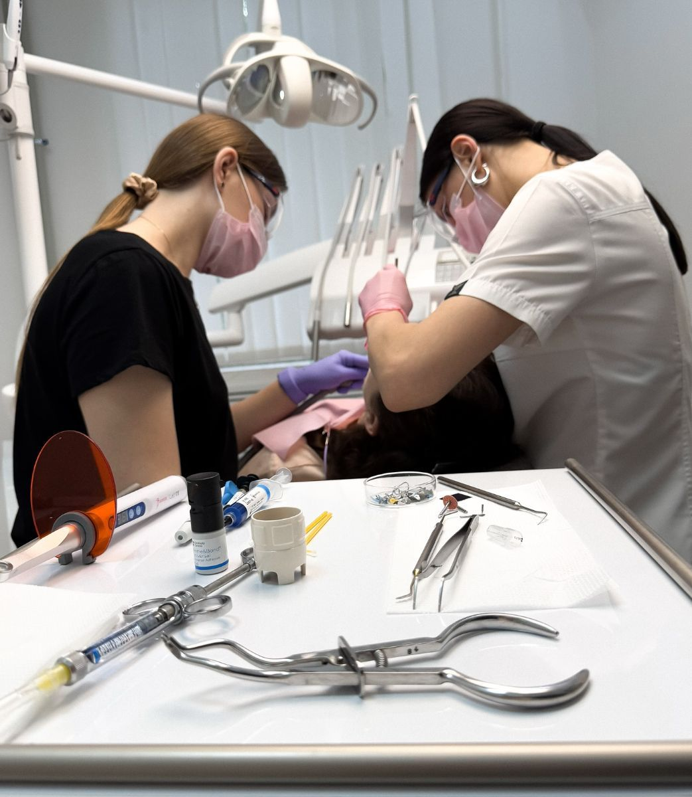
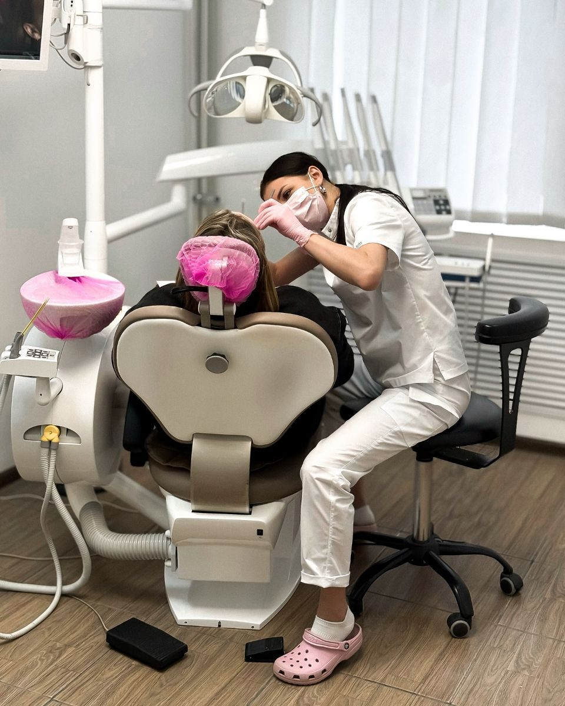

Лікарі
Наша команда
10 спеціалістів, які поєднують досвід, сучасні методики та уважне ставлення до кожного пацієнта — дорослого чи маленького.

Дитячий прийом
Візит до стоматолога — без сліз
Для дітей, які вперше йдуть до стоматолога, є ознайомчий візит без лікування: малюк знайомиться з лікарем, кріслом та інструментами. Батьки відзначають терпіння і турботу наших дитячих лікарів.

Запис на прийом
Оберіть свого лікаря
Не знаєте, до кого записатися? Опишіть проблему — адміністратор порадить спеціаліста.